How to interpret these maps?
Here, we show 100 randomly sampled attention and error maps from our test data (no cherry picking). Specifically, for a given image and question, we show the following in the respective column order: VQA-Net's Answer, the ground truth (GT) answer, our Error Map (ErrMap), our Justifying Module Attention Maps (J-Att), our best performing BestBERT Attention Maps (BestBERT), the baseline attention (BaselineBERT) and the human-annotated attention map.
ErrMap: Ideally, the VQA should be wrong if this strongly points to relevant regions in the image (eg, index 12). Note how this map sometimes points to the relevant regions, but is weaker than the attention maps (BestBERT or J-Att), and hence the VQA is correct (index 53). Note that the ErrMap visualization here is slightly different from the paper. We have multiplied the map with the Failure prediction probability for a better visualization.
BestBERT: Ideally, this should point to relevant regions when the VQA is correct and not when the VQA is wrong. Eg, Index 5, bestBERT points to relevant areas, answer is correct; Index 33, it points to the food instead of the table, hence answer incorrect.
J-Att: Ideally, this should point to relevant regions when the VQA is correct and not when the VQA is wrong. However, since this was trained to be similar to human-annotated attention, note how this attention is mostly always relevant and centered even when the VQA is wrong.
BaselineBERT: Ideally, this should point to relevant regions when the VQA is correct and not when the VQA is wrong. However, it does so less on average than compared to BestBERT - that is, it often looks at relevant regions when the VQA is incorrect and vice versa. Eg, Index 54, the BaselineBERT looks at the orange juice and still answers no.
Overall, note how looking the attention maps alone is mostly insufficient to explain why the machine is correct/wrong
Now try looking at the Error Map as well.
Interpreting ErrMap + BestBERT/J-Att/BaselineBERT Attentions: For the best explanation, look at both the Error Map (ErrMap) and either of our Attention Maps.
Note how:
Also note how the VQA is correct when the attentions are strongly on the correct regions and the error maps are weak or pointed away from the relevant areas.
Note that all cases may not work as expected, but it mostly should. The GT answer comes from the publicly available VQA 2.0 dataset. We have also included our Justifying Module's failure prediction results on each case in the last column. A prediction of True means the VQA will fail.
| Index | Image | Question | Robot Answer | GT Answer | Error Map (ErrMap) (our) | Attention Map (J-Att) (our) | Attention Map (BestBERT) (our) | Attention Map (BaselineBERT) | Human Attention | Failure Pred (our) |
|---|---|---|---|---|---|---|---|---|---|---|
| 0 |

|
is there a bridge in the background | yes | yes |

|
False | ||||
| 1 |

|
are these people playing on the same team | no | yes |

|

|
False | |||
| 2 |

|
what is the green vegetable | broccoli | broccoli |

|
False | ||||
| 3 |

|
was this photo taken this century | yes | no | False | |||||
| 4 |

|
is this a parking lot | no | yes |

|
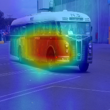 | False | |||
| 5 |

|
is the man wearing shorts | yes | yes |

|

|
False | |||
| 6 |
|
what color is the field | green | green | 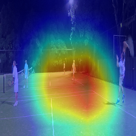 | True | ||||
| 7 |

|
is the dog being aggressive | no | no |

|
False | ||||
| 8 |

|
are the men in yellow vests loading luggage onto the plane | no | no | False | |||||
| 9 |

|
what is on top of the elephant | duck | bird | False | |||||
| 10 |

|
what object is below the street sign | bus | mirror | True | |||||
| 11 |

|
is the water calm | no | no | False | |||||
| 12 |

|
who uses this bathroom | people | patient |

|
True | ||||
| 13 |

|
what color are the animals in the photo | black and white | black white |

|
True | ||||
| 14 |

|
are there tomatoes on the pizza | yes | yes | False | |||||
| 15 |

|
is this mobile ready for use | yes | no | False | |||||
| 16 |

|
what color is the photo | black and white | black and white |

|

|

|
True | ||
| 17 |

|
are there riders on each bike | yes | yes |

|
False | ||||
| 18 |

|
what is the many using to take a picture | camera | phone | 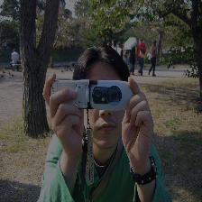 | False | ||||
| 19 |

|
are they going forward of backward | yes | forward | 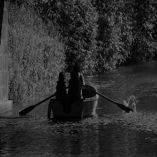 |

|
False | |||
| 20 |

|
what color is the countertop | white | white |

|

|
True | |||
| 21 |

|
what is covering the windows | blinds | blinds | 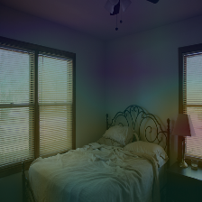 |

|
False | |||
| 22 |

|
are they at home | no | no | False | |||||
| 23 |

|
is the giraffe being gentle | yes | yes | False | |||||
| 24 |

|
is this a practice match | yes | yes |

|
False | ||||
| 25 |

|
is the man going to jump over the train | no | no |

|
False | ||||
| 26 |
|
is the dog being aggressive | no | no |
|
False | ||||
| 27 |

|
is this a selkirk rex | no | no | False | |||||
| 28 |
|
does the boy double layer clothing | yes | yes | False | |||||
| 29 |

|
what is the plane preparing to do | fly | land | 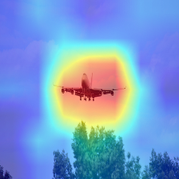 | 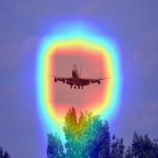 | True | |||
| 30 |

|
is this a recent photo | no | no | False | |||||
| 31 |

|
what are they playing | baseball | baseball | False | |||||
| 32 |

|
is there a bowl seen | no | yes | 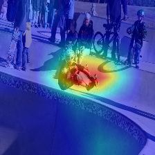 |

|
False | |||
| 33 |

|
what color is the table | brown | white | True | |||||
| 34 |

|
is there a toaster on the counter | yes | yes | False | |||||
| 35 |

|
how many girls are in this picture | 2 | 2 | False | |||||
| 36 |

|
why is part of the photo blurry | no | movement | True | |||||
| 37 |

|
does this belong to a man or woman | woman | woman |

|
False | ||||
| 38 |

|
what is floating in the sky | kite | kites | 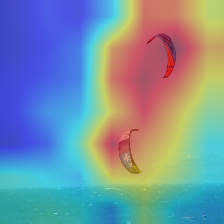 | False | ||||
| 39 |

|
are there any people on this picture | no | no | False | |||||
| 40 |

|
are they on a boat | yes | yes | False | |||||
| 41 |

|
where are the people behind the bars | behind fence | in jail | 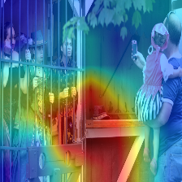 | True | ||||
| 42 |

|
is this girl wearing nail polish | no | yes | False | |||||
| 43 |

|
what is the person looking at | kite | kite | False | |||||
| 44 |

|
what items are on the rug | books | there is no rug that's bedspread | True | |||||
| 45 |

|
where are the yellow cabs | car | road | True | |||||
| 46 |

|
what animal is on the bench | cat | cat |

|
False | ||||
| 47 |

|
are the cows being milked | yes | yes | False | |||||
| 48 |

|
what color is the signal light | yellow | red | True | |||||
| 49 |

|
how many slices of chicken are in this picture | 2 | 15 | True | |||||
| 50 |

|
how many people are seated | 3 | 2 | 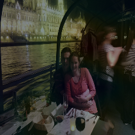 | False | ||||
| 51 |

|
is the girl running from the elephant | no | no | False | |||||
| 52 |
|
is this girl wearing nail polish | no | yes | False | |||||
| 53 |

|
which way is the giraffe facing | right | right | False | |||||
| 54 |

|
is that orange juice | yes | no | False | |||||
| 55 |

|
what is the man doing | cooking | writing | True | |||||
| 56 |

|
is the man wearing a helmet | no | no | False | |||||
| 57 |

|
which food is a side order | fries | fries | True | |||||
| 58 |

|
what are the people doing | flying kites | flying kites | 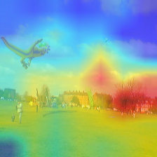 |

|
False | |||
| 59 |

|
what color is the traffic light | red | red | True | |||||
| 60 |

|
why is the man wearing protective gear | safety | yes | 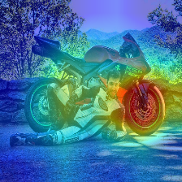 | True | ||||
| 61 |

|
what color is the bus | white | white and blue | True | |||||
| 62 |

|
how many of the calf's eyes can we see in this | 1 | 1 |

|

|

|

|

|
False |
| 63 |

|
is the lady in front about to hit the ball | yes | yes | 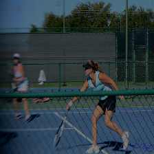 | 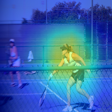 | False | |||
| 64 |

|
how many bridges are there | 2 | 1 | False | |||||
| 65 |

|
is this a subway | yes | no | 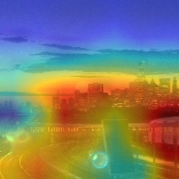 |

|
False | |||
| 66 |

|
are the mobiles being charged | no | yes | 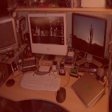 | False | ||||
| 67 |

|
how many motors does the boat have | 2 | 2 | 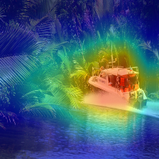 | 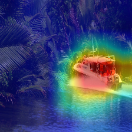 | 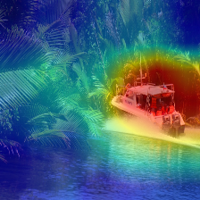 | 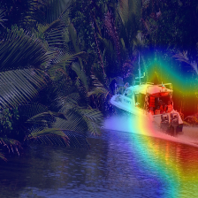 | False | |
| 68 |

|
what breed of pony is that | horse | shetland |

|
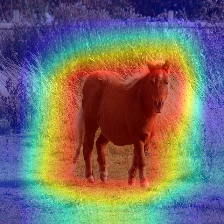 | True | |||
| 69 |

|
what color is his tie | black | black | 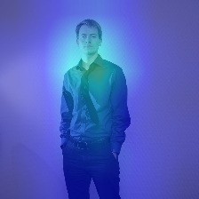 | True | ||||
| 70 |

|
what time of day is this | night | night | 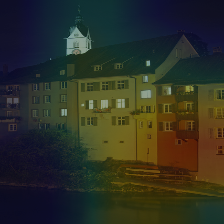 | 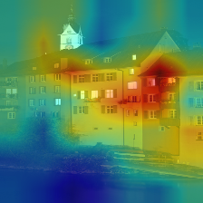 | False | |||
| 71 |
|
what sport is the girls playing | soccer | soccer |

|
False | ||||
| 72 |

|
what is dripping from the broccoli | noodles | cheese | True | |||||
| 73 |

|
what is flying behind the structure | flag | flag | 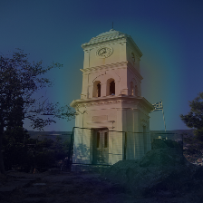 | 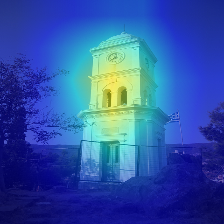 | False | |||
| 74 |

|
who is speaking | man | woman | True | |||||
| 75 |

|
what color is the trash can | black | gray | True | |||||
| 76 |

|
where are the ties | nowhere | on rack | 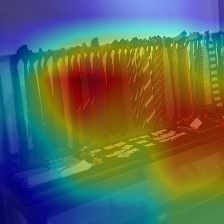 | 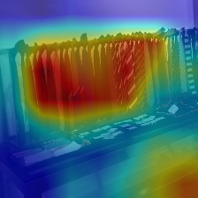 | True | |||
| 77 |

|
what is the jersey number for the player at bat | 5 | 9 |

|
True | ||||
| 78 |

|
what's the color on the | white | black |

|

|

|

|

|
True |
| 79 |

|
is the print small | yes | yes |

|
False | ||||
| 80 |

|
what kind of food is this | chinese | chinese | False | |||||
| 81 |
|
is there water | yes | yes | False | |||||
| 82 |

|
what does the clock say | 5:00 | kerttuli |

|
True | ||||
| 83 |

|
how many objects are there | many | 9 | True | |||||
| 84 |

|
what color are the flowers | yellow | multi | True | |||||
| 85 |

|
is the bathtub clean | yes | no | False | |||||
| 86 |

|
what city and country is featured | london | london, england | True | |||||
| 87 |

|
where is the detour to | street | oxford street | 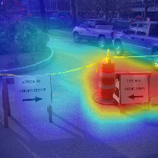 | True | ||||
| 88 |

|
are the people looking uphill | no | no |

|
False | ||||
| 89 |

|
are the person's veins | yes | yes |

|

|

|

|

|
False |
| 90 |

|
is a hurricane going on | no | no | 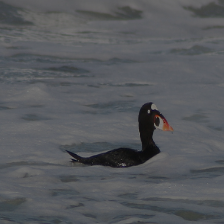 | False | ||||
| 91 |
|
what color is the cab of the truck | red | red | True | |||||
| 92 |

|
is the motorcycle rider wearing boots | no | yes | False | |||||
| 93 |

|
what sport is the boy playing | tennis | tennis | False | |||||
| 94 |

|
highest number shown is 60 | yes | yes | True | |||||
| 95 |

|
what color is man's suit | black | tan |

|

|

|

|

|
True |
| 96 |

|
is this indoors | yes | yes | False | |||||
| 97 |

|
what is the person wearing | tie | tie | False | |||||
| 98 |

|
would you like to be the person filming this shot | yes | yes |

|

|
False | |||
| 99 |

|
what shape is this plate | rectangle | square | True |